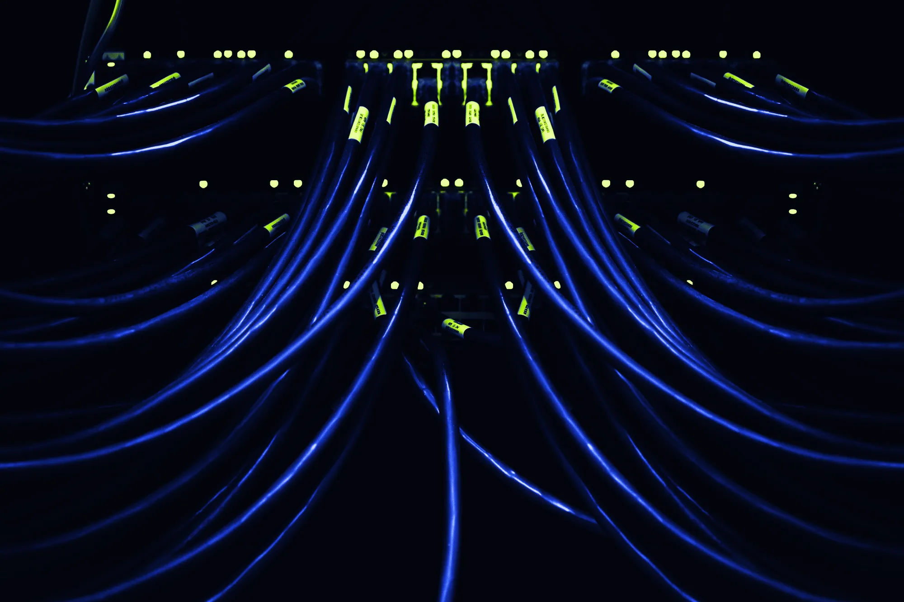

Your operations, automated.
Built by two engineers from Técnico. We find what's still manual in your operations and build tailored software to automate it.

Built by two engineers from Técnico. We find what's still manual in your operations and build tailored software to automate it.